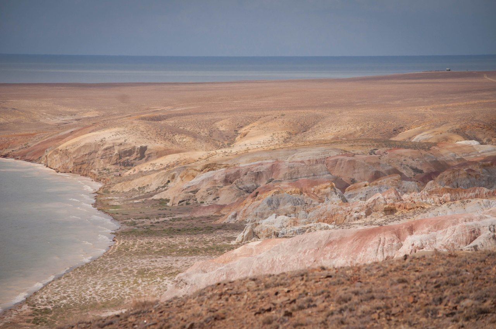

Мыс Шекелмес
Шекелмес таулары Киін-Керіш жазығынан 20 шақырым жерде, Зайсанның жағасында орналасқан. Ол әртүрлі формада қатып қалған, жаңбыр жауған және шайылған сазды және құмды таулардан тұрады. Шекелмес каньондарының бөліктерінде, егер сәттілік болса, қазба қолтырауындардың сүйектерін, саламандраларды, динозавр жұмыртқасының қабығын, ежелгі өсімдіктердің қалдықтарын және т.б. тауып алуға болады. Ал жағалауда көптеген туристер көл толқындарымен жылтыратылған мөлдір сылақтың сынықтарын кәдесый ретінде жинайды.